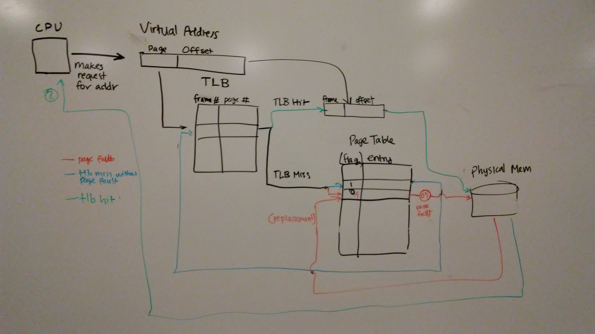
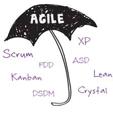
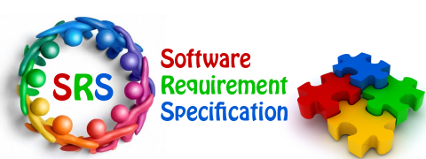
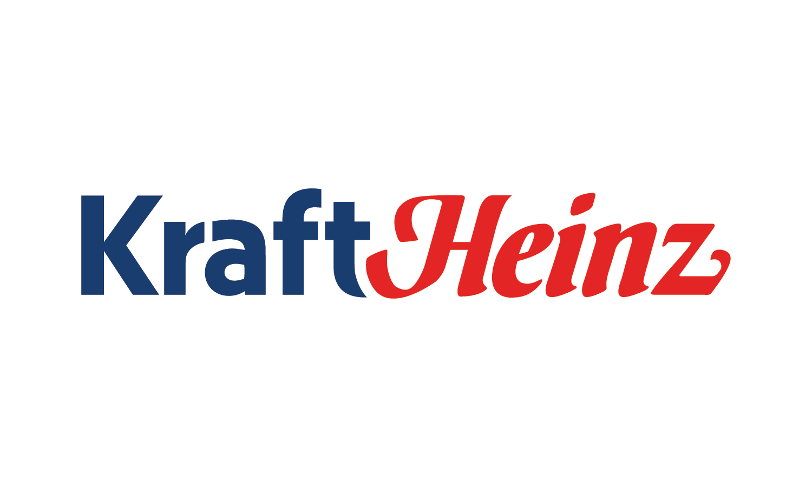
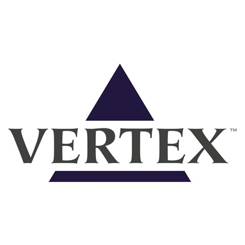
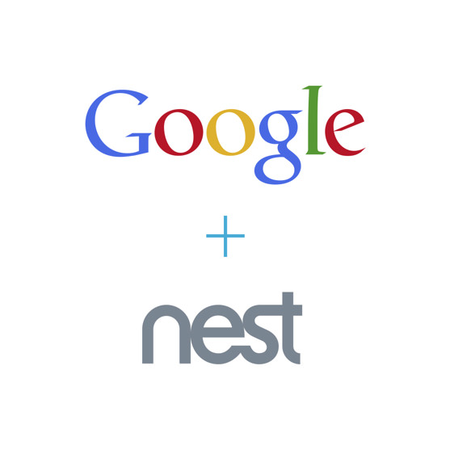
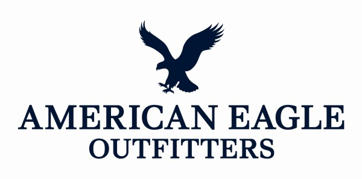
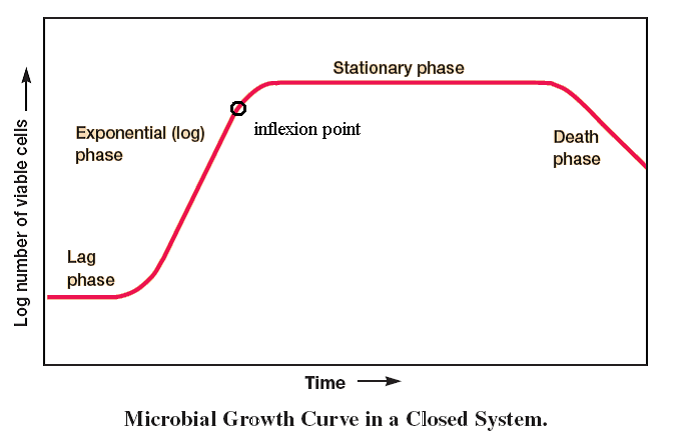
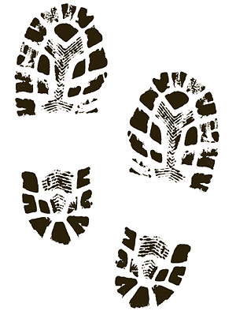
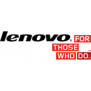

I was a Posse Foundation Finalist, a four-year, full-tuition leadership scaholsrhip for public high school students with extraordinary academic and leadership potential, for Brandeis University. Though I was not a Posse Scholar, I was able to attend Brandeis through the generous Brandeis Family and Friends Scholarship and the Aaron Thal Endowed Scholarship.
School Projects

virtmem: Virtual Memory in C
Software Systems 2017 - Virtual Memory
Our student team explored implementations of virtual memory by working with processes and algorithms involved in page replacement policies.

Brachistochrone Curve Physics Engine
Software Systems 2017 - Custom Physics Engine
Our student team explored two properties of the Brachistochrone Curve using our own physics engine.
Tuvalu
Independent Studies 2017- Tuvalu Pavilion at 2017 Venice Biennale
Our student team built a website for the Tuvalu pavilion at the 2017 Venice Biennale.

Project UMass
Software Development Methodologies 2017 - Security Assignment
Our student team reported on the best agile methodology to ensure that a fictitious student health database is secure.
Requirements Analysis on Rail Ticketing System
Software Development Methodologies 2017 - Requirements Analysis Assignment
I wrote about the missing and ambigious user and customer requirements.

Project Library: Software Requirements Specifications (SRS) Document
Software Development Methodologies 2017 - Term Project
I made a software requirements specifications (SRS) document that describes the necessary functions and capabilities of a completely integrated automated library system and detail the constraints that it must respect.

Kraft Heinz Merger
Understanding Management - Term Project
Our student team introduces a new product for the Kraft Heinz Merger: World Flavors Seasoning.
Dyson
Understanding Management - Term Project
I analyzed Dyson's current strategies and give recommendations on investments and strategies that can result in future profitability and profit growth.

Vertex Pharmaceuticals Portfolio Selection
Project, Program, Portfolio Management - Term Project
Our group presented recommendations on which drugs to fund, partner, license, and keep as future developments.
Women's Lunch Place
Marketing Research - Term Project
Our student team reported on how Women's Lunch Place, a day shelter for homeless women, can increase monetary donations from volunteers.

Google Nest
Marketing Management - Term Project
Our group project focused on how Google can use its acquisition of Nest to establish a foothold in the consuummer hardware market.

American Eagle Outfitters
Organizational Behavior - Term Project
Our group project focused on how American Eagle can improve sales.

Modeling Bacterial Growth Curve in MATLAB
Scientific Data Processing - Term Project
Our student team wrote a MATLAB program to study differences between growth curves for different temperatures.

Soles
Business, Culture, Society - Term Project
Our group project developed a fictitious company, Soles.

Lenovo
Capitalist Enterprise - Term Project
Our group project focused on presenting Lenovo's business strategy under the pressure of globalization.